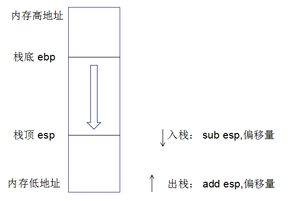
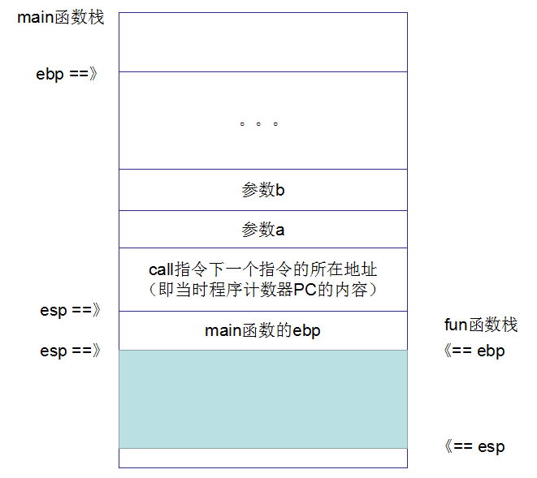
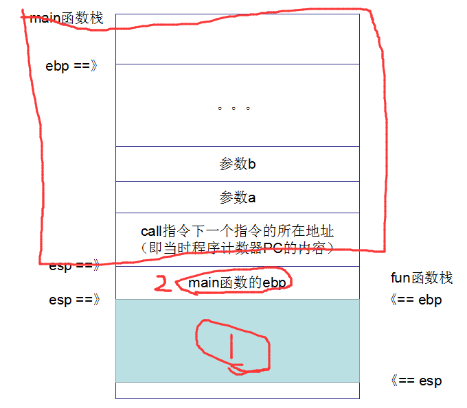
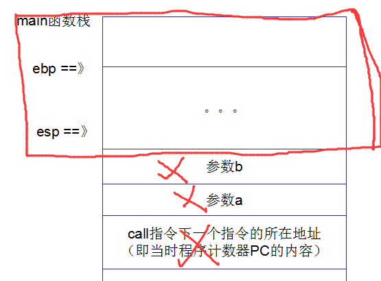

TreeviewCopyright @doctording all right reserved, powered by aleen42
call ret指令
汇编程序
- windows平台下的c程序
int fun(int a, int b)
{
a += 1;
b *= 2;
int c = a + b;
return c;
}
int main()
{
int a = 1;
int b = 2;
int c = fun(a, b);
printf("%d\n", c);
return 0;
}
- 汇编程序
int main()
{
00938270 push ebp
00938271 mov ebp,esp
00938273 sub esp,0E4h
00938279 push ebx
0093827A push esi
0093827B push edi
0093827C lea edi,[ebp-0E4h]
00938282 mov ecx,39h
00938287 mov eax,0CCCCCCCCh
0093828C rep stos dword ptr es:[edi]
int a = 1;
0093828E mov dword ptr [a],1
int b = 2;
00938295 mov dword ptr [b],2
int c = fun(a, b);
0093829C mov eax,dword ptr [b]
0093829F push eax
009382A0 mov ecx,dword ptr [a]
009382A3 push ecx
009382A4 call fun (93710Dh)
009382A9 add esp,8
009382AC mov dword ptr [c],eax
printf("%d\n", c);
009382AF mov eax,dword ptr [c]
009382B2 push eax
009382B3 push offset string "%d" (983EE8h)
009382B8 call @ILT+3880(_printf) (936F2Dh)
009382BD add esp,8
return 0;
009382C0 xor eax,eax
}
内存栈和call指令

注意到：函数调用一定是call指令
009382A4 call fun (93710Dh)
注意到call指令之前的一些指令: 是参数入栈，而且是从右到左的顺序
0093829C mov eax,dword ptr [b]
0093829F push eax
009382A0 mov ecx,dword ptr [a]
009382A3 push ecx
CALL指令（"调用"指令）的功能，就是以下两点：
- 将下一条指令的所在地址（即当前程序计数器PC的内容）入栈（理解为保护当前线程栈）
- 并将子程序的起始地址送入PC（于是CPU的下一条指令就会转去执行子程序）
执行栈的变化分析
- 在main线程栈中，将参数压入，并将call指令下一条指令所在地址也压入栈

- call之后，debug就能进入fun函数里面，此时的操作时
push ebp
这是保存上一个函数栈的ebp, 也就是保存main函数栈，可以发现main函数开头也是这一句。（所以，每个函数都有自己的函数栈，但都是在整个内存栈中）
- push指令后，esp是自动往下移动了的，这一个是把当前的esp赋值给ebp（所以，main函数的ebp，保存了的，这里ebp变化了，也就形成了fun函数自己的函数栈了）
mov ebp,esp
sub esp,0CCh
sub操作是给当前函数分配栈大小的初始空间
- 接着进入到fun函数栈了

- return
return c;
011C8248 mov eax,dword ptr [c]
}
011C824B pop edi
011C824C pop esi
011C824D pop ebx
011C824E mov esp,ebp
011C8250 pop ebp
011C8251 ret
return语句，可以看到最后的返回结果存到了eax中, fun函数的最后3条指令
011C824E mov esp,ebp
011C8250 pop ebp
011C8251 ret
mov esp, ebp就是清除fun的函数栈，现在esp指向了ebp（ebp就是原来fun函数的栈底地址）pop ebp就是弹出main函数的ebp
即如下的1,2操作，接着函数栈变成了，如下图红色框里面的内容：

ret指令
ret指令用栈中的数据，修改IP的内容，从而实现近转移； CPU执行ret指令时，进行下面的两步操作：
- (IP) = ((ss)*16 +(sp))
- (sp) = (sp)+2
经过上面的两条语句后，esp指向了 上图中[call指令下一个指令的所在地址] 那里， IP刚好取得地址，然后回到原来，main函数的地方
接着 esp 增加，也就是出栈，所以 main函数栈如下

回到main函数中
011C82A4 call fun (11C710Dh)
011C82A9 add esp,8
011C82AC mov dword ptr [c],eax
printf("%d\n", c);
011C82AF mov eax,dword ptr [c]
011C82B2 push eax
011C82B3 push offset string "%d" (1213EE8h)
011C82B8 call @ILT+3880(_printf) (11C6F2Dh)
011C82BD add esp,8
call指令之后是add esp 8操作，这是因为有两个参数，所以add esp 8 ，弹出两个int参数
mov dword ptr [c],eax操作则是把fun函数返回结果存储到变量c中，即函数调用完后，一切恢复正常（fun函数栈已经被清除掉了）；回到main的函数栈中，即如下图
